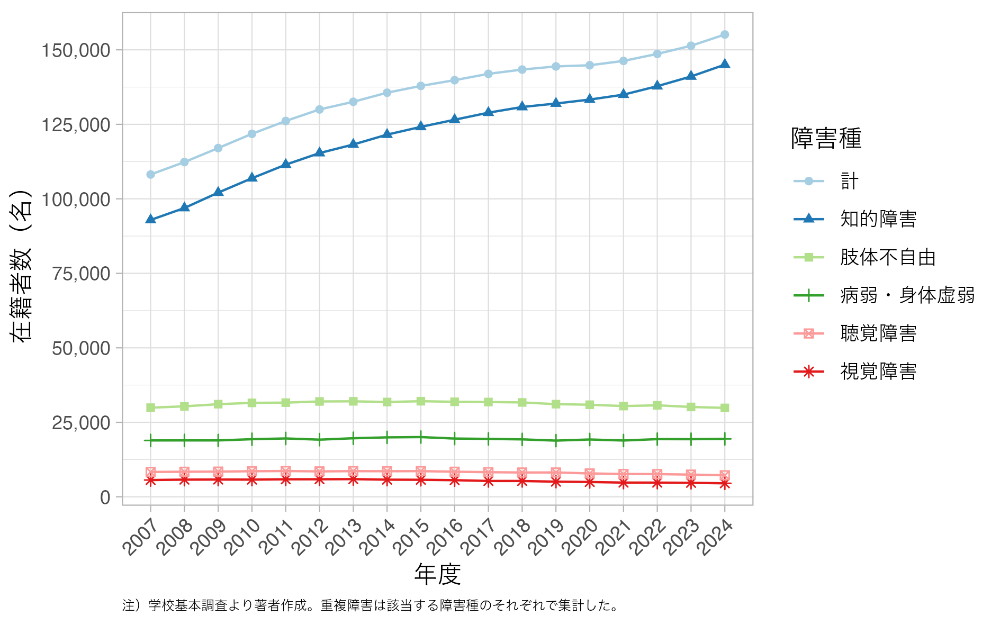
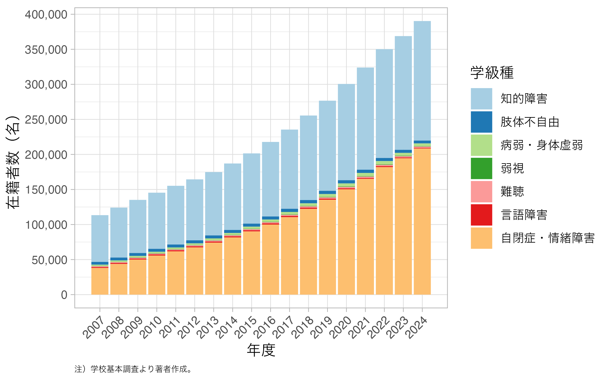
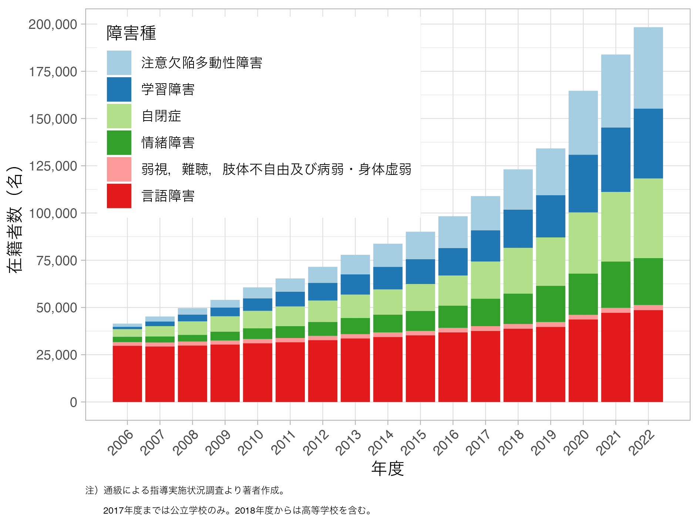

5 インクルーシブ教育と近年の動向
5.1 インクルーシブ教育とは
英語のinclusiveには「包括的な」「だれでも参加できる」といった意味があります。 インクルーシブ教育（inclusive education）とは，「だれもが参加できる教育」だと言えそうです。 ここではインクルーシブ教育について説明した後に，現在の日本の特別支援教育の現状と近年の動向を検討します。
5.1.1 サラマンカ声明
インクルーシブ教育が多くの人に認知されるきっかけとなったのは，1994年にユネスコとスペイン政府が共催した「特別なニーズ教育に関する会議：アクセスと質」において採択されたサラマンカ声明です1。
この声明では，障害がある人を含めた全ての人の教育を受ける権利を保障する「万人のための教育（Education for All）」の目的を達成するために，「特別ニーズ教育に関する行動の枠組み」を承認したと述べられています。 声明の目的に関する説明に続いて，万人のための教育を達成するためのインクルーシブ志向の学校について次のように宣言がなされます2。
- すべての子どもは誰であれ，教育を受ける基本的権利をもち，また，受容できる学習レベルに到達し，かつ維持する機会が与えられなければならず，
- すべての子どもは，ユニークな特性，関心，能力および学習のニーズをもっており，
- 教育システムはきわめて多様なこうした特性やニーズを考慮にいれて計画・立案され，教育計画が実施されなければならず，
- 特別な教育的ニーズをもつ子どもたちは，彼らのニーズに合致できる児童中心の教育学の枠内で調整する，通常の学校にアクセスしなければならず3，
- このインクルーシブ志向をもつ通常の学校こそ，差別的態度と戦い，すべての人を喜んで受け入れる地域社会をつくり上げ，インクルーシブ社会を築き上げ，万人のための教育を達成する最も効果的な手段であり，さらにそれらは，大多数の子どもたちに効果的な教育を提供し，全教育システムの効率を高め，ついには費用対効果の高いものとする。
この声明は，「万人のための教育」が目的だと述べられているように，障害児への教育のみを対象としたものではありません。 児童労働や貧困，戦争や武力紛争の犠牲者など教育を受ける権利が保障されていない子ども全てを対象としているものです。
これに続いて，政府への要求として「個人差もしくは個別の困難さがあろうと，すべての子どもたちを含めることを可能にするよう教育システムを改善することに，高度の政治的・予算的優先性を与えること」等を求めています。
インクルーシブ教育は一人一人は違うことを前提に，そうした子どもたちの教育を受ける権利を保障できる体制づくりを求めているものだと言えます。
5.1.2 インクルージョンのためのガイドライン
ユネスコが2005年に発表した「インクルージョンのためのガイドライン（Guidelines for Inclusiton : Ensuring Access to Education for All）」もインクルーシブ教育を理解するのに役立ちます。 副題には「万人のための教育」が含まれていることに注目してください。
このガイドラインではまず，インクルージョンの起源が特殊教育にあることを紹介しつつ，現在ではその実践は「インテグレーション（integration）」として知られるアプローチを通じて，障害のある子どもを通教学級に統合する「メインストリーミング（mainstreming）」へとシフトしていることに触れています。 続けて，障害がある子どもを通常学級に参加させる際に障壁となる要因として，通常学級や学校組織が障害がある児童のための変更や調整を行わないことに言及した後に，障害のある子どもが経験する困難は，現在の学校がそうした子どもたちの多様性を受け入れるように組織されていないこと，および，教授法に柔軟性がないことに起因すると分析しています4。
続けて，多様性に対応できるような通常の学校へと改革を進めていくことが必要であると述べられます。 子どもたち一人一人の違いは，「解決すべき問題（problems to be fixed）」としてではなく，「学習を豊かにする機会（opportunities for enriching learning）」として捉えるべきだと，発想の転換をすることが求められます。
ガイドラインでは，インクルージョンの重要な要素として次の4つを挙げています（p.15）。
- インクルージョンはプロセスである。（Inclusion is a process.）
- インクルージョンは障壁の特定と除去に関係する。（Inclusion is concerned with the identifi cation and removal of barriers.）
- インクルージョンとは，すべての生徒が［教育の場に］いること，参加，達成についてである。（Inclusion is about the presence, participation and achievement of all students.）
- インクルージョンは，社会から疎外されたり，排除されたり，学業不振に陥ったりする危険性のある学習者グループに特に重点を置く。（Inclusion involves a particular emphasis on those groups of learners who may be at risk of marginalization, exclusion or underachievement.）
この3番目について補足します。 いること（“presence”） とは，「どこで教育を受け，どれだけ確実に，時間通りに通うか」についてであると説明されているので，名簿上いるだけでなく実際に教育が行われる場に他の生徒と同じぐらいの時間出席することが重視されていることを意味します。 続く「参加」（participation）は，そこでの経験の質に関係すると説明されます。 例えば，出席はしているものの，内容を何も理解できずにいるだけでは意味がないということです。 最後の「達成」（achievement）は，単なるテストの結果にとどまらない，カリキュラムを通じて得た学習の成果についてということです。 つまり，実際に教育の場にいて，有意義な学習の経験を積み，カリキュラムが目標とするものを実際に身につけることが必要というわけです。
例えば，重度の知的障害がある人を通常学級が行われている場にただ連れてきて，教員の言うことが何も理解できていなくとも授業時間が終わるまでいれば良い，というのはインクルージョンになりません。
ガイドラインが求めている4つの要素を満たすためには，教授法やカリキュラムに柔軟性が必要になるため通常学校の改革が求められる訳です。
このガイドラインを元にして野口 （2022）はインクルーシブ教育を以下のように定義しています。 インクルーシブ教育のポイントを明確に示してあるので紹介しておきます。
インクルーシブ教育は，多様な子どもたちがいることを前提とし，その多様な子どもたち（排除されやすい子どもたちを含む）の教育を受ける権利を地域の学校で保証するために，教育システムそのものを改革していくプロセス
ここでは，定義中のいくつかポイントを解説してみます。
まず，定義の中で「多様な子どもたち（排除されやすい子どもたちを含む）の教育を受ける権利」という言葉に注目しましょう。インクルーシブ教育は多様な子どもたちの教育を受ける権利を保障するためのものです。 教育を受ける権利は基本的人権に含まれるもので，誰もが持っているものです。
なぜこのようなことを明言する必要があるかというと，障害児を含む多様な子どもたちは現行の教育システムから排除されやすいからに他なりません。 例えば，自閉スペクトラム症がある人は一般に聴覚的情報よりも視覚的情報の処理を得意としていて，指示が口頭のみで出される場合には活動にうまく参加できないことが多々あります。 しかしながら，学校では指示が口頭のみで出されることが少なくありません。 このような場合には，自閉スペクトラム症の人は活動にうまく参加できずに教育を受ける権利が十分に保証されているとはいえないでしょう。
もう一つ注目してほしいポイントは「教育システムそのものを改革していくプロセス」という箇所です。 全ての子どもたちの教育の権利を保障する過程ではうまくいった取り組みもあればうまくいかない取り組みもあるはずです。 その中では教育内容やその指導の方略を見直して変更・修正していく必要が常にあります。 多様なニーズを持つ子どもたちの権利を保障するという理念に基づき，絶えず良い方法を模索し続けるその過程こそがインクルーシブ教育だということです。
5.1.3 障害者の権利に関する条約との関連
ここでは第2.3節で解説した障害者権利条約の中で，教育がどのように扱われているかを見てみましょう。 障害者権利条約では，教育について第24条で以下のように定めています（以下は外務省の訳）。
締約国は，教育についての障害者の権利を認める。 締約国は，この権利を差別なしに，かつ，機会の均等を基礎として実現するため，障害者を包容するあらゆる段階の教育制度及び生涯学習を確保する。当該教育制度及び生涯学習は，次のことを目的とする。 （a） 人間の潜在能力並びに尊厳及び自己の価値についての意識を十分に発達させ，並びに人権，基本的自由及び人間の多様性の尊重を強化すること。 （b）障害者が，その人格，才能及び創造力並びに精神的及び身体的な能力をその可能な最大限度まで発達させること。 （c）障害者が自由な社会に効果的に参加することを可能とすること。
ここで「障害者を包容するあらゆる段階の教育制度」はもとの英語では”an inclusive education system at all level”です。 インクルーシブ教育の推進は，障害者の教育の権利を保障するものとして条約に定められています5。
障害者権利条約の第24条では，この目的を達成するために条約の締結国に次の5つを求めています。
- 障害者が障害に基づいて一般的な教育制度から排除されないこと及び障害のある児童が障害に基づいて無償のかつ義務的な初等教育から又は中等教育から排除されないこと。
- 障害者が，他の者との平等を基礎として，自己の生活する地域社会において，障害者を包容し，質が高く，かつ，無償の初等教育を享受することができること及び中等教育を享受することができること。
- 個人に必要とされる合理的配慮が提供されること。
- 障害者が，その効果的な教育を容易にするために必要な支援を一般的な教育制度の下で受けること。
- 学問的及び社会的な発達を最大にする環境において，完全な包容という目標に合致する効果的で個別化された支援措置がとられること。
この条約の批准を受けて2012年の中央教育審議会の「共生社会の形成に向けたインクルーシブ教育システム構築のための特別支援教育の推進（報告）（以下，中教審報告）」は，インクルーシブ教育を実現するための日本の特別支援教育の方向性を示しました。
中教審報告の中では，連続性のある「多様な学びの場」を整備していくことが重要であると述べられています。 学ぶ場のオプションを増やすことで，多様なニーズに対応する方略をとっていると言えます。
インクルーシブ教育システムにおいては，同じ場で共に学ぶことを追求するとともに，個別の教育的ニーズのある幼児児童生徒に対して，自立と社会参加を見据えて，その時点で教育的ニーズに最も的確に応える指導を提供できる，多様で柔軟な仕組みを整備することが重要である。小・中学校における通常の学級，通級による指導，特別支援学級，特別支援学校といった，連続性のある「多様な学びの場」を用意しておくことが必要である。
また，これらそれぞれの指導の場において，適切な環境整備を進めていくことに加えて，各地域で学校間の連携を充実させていくことの重要性を指摘しています。 例えば，特別支援学校教員の巡回相談（センター的機能の一つ，第4.3節参照）であったり，地域のバランスを考慮して特別支援学校の分校・分教室を設置することであったり，特別支援の教育資源が偏らないようにすることが必要だと述べられています。
中教審報告において，障害者権利条約中にある「一般的な教育制度（the general education system）」に特別支援学校が含まれるかが検討されました。 これは特別支援学校が一般的な教育制度に含まれないのであれば，特別支援学校は障害のある幼児児童生徒を一般的な教育制度から排除していることになるため，日本の特別支援教育はインクルーシブ教育に逆行することになります。
中教審報告の中では，外務省に照会が行われ「条約第24条に規定する「general education system（教育制度一般）」の内容については，各国の教育行政により提供される公教育であること，また，特別支援学校等での教育も含まれるとの認識が条約の交渉過程において共有されていると理解している。したがって，「general education system」には特別支援学校が含まれると解される」という回答が参考資料として提出されています。
こうした背景もあり，多様な学びの場全体を持って一般的な教育制度とするという（日本独特の）解釈で，特別支援学校や特別支援学級等の特別な支援の場を整備する方向に日本の特別支援教育は進んでいます。 ただ，この方向性が正しいのかについては，次節の近年の動向や2022年9月の障害者権利委員会による総括所見等も含めて再検討する必要があると感じます。
5.2 近年の動向
ここでは今後の特別支援教育やインクルーシブ教育のあり方を考えます。 まず，特別支援教育を受ける児童生徒数の推移について確認します。 続けて，障害者権利委員会による対日本審査の初回報告の教育の箇所について検討します。 この総括所見を，より理解するためにはその半年ほど前に物議を醸した文部科学省による通知についても知っておくと良いので，それについても合わせて解説します。
5.2.1 特別支援教育を受ける児童生徒数の増加
文部科学省の調査結果
特別支援学校に在籍する幼児児童生徒の推移を図 5.1に示しました。 子どもの数は減っているにも拘らず，2007年の特別支援教育スタートから一貫して増え続けていることが分かります。 この増加は全ての障害種で均等に起こっている訳ではなく，知的障害者の幼児児童生徒が増えたことによって全体が増えています。

続いて特別支援学級に在籍する児童生徒の推移を図 5.2に示しました。 ここでも特別支援学校と同様に，在籍する児童生徒の数が増えていることが分かります。 知的障害と自閉症・情緒学級で特に増えていることが分かります。

通級による指導を受けている児童生徒数について，学習障害や注意欠陥多動性症候群を対象に含めた2006年分からの推移を図 5.3に示しました。 注意欠陥多動性障害，学習障害，自閉症，情緒障害において特に増加しており，2006年度に比べて2022年度は全体で4倍以上の数の児童生徒が通級による指導を受けるようになりました。

増加の原因
特別支援教育を受ける幼児・児童・生徒数の増加については様々な原因が考えられています。 増加の理由の一つとして，特別支援教育に関する理解や認識が高まってきたことを文部科学省は挙げています6。 従来は特別支援学校や特別支援学級の取り組みは知られていなかったものの，近年では，学級あたりの児童生徒数が少ない特別支援学校や特別支援学級では通常学級に比べてきめ細やかな個別支援を受けやすいことが知られるようになり，従来はそうした場を選ばなかった人が選ぶようになって在籍の児童生徒が増えたという説明です。
ただし，この説明を疑問視する声もあります。 菅原 （2022）は，日本において特別支援学校・学級を選択する児童生徒が増え続けている現状が十分に検証されていないことを問題視しており，「友達や先生に負担をかけるかもしれない」「学校にエレベーターがないから」といった消去法や諦めから特別支援学校や学級を選択している可能性について言及しています。 国際的なインクルーシブ教育の流れには逆行していることを指摘した上で，特別支援学校・学級の増加傾向に合わせて教室数を増やす方向が本当に良いものかについて再考を求めています。
通常学級における「許容度」の低下が特別支援学校や特別支援学級の在籍者数の増加に寄与しているという考えもあります。 楠見 （2024）は，現在の日本の教育システムが標準的とされる子ども像を基準に設計されており，その標準的な教育課程に適応できない子どもが特別な配慮や支援を与えられうようになっていることを指摘した上で，特別支援学校や特別支援学級の在籍者数の増加していることは通常教育の許容度の低下を反映していると分析しています。
特別支援学校の在籍者数や通級による指導を受ける児童生徒の増加は，教室などの学校設備の不足や指導する教員の不足といった問題も引き起こしています。 文部科学省が2023年の10月に行った調査では，全国の公立特別支援学校で3359教室が不足していることが明らかとなっています7。
この増加の原因を分析した上で，必要な体制を整えていくことは今後の課題と言えるでしょう。
5.2.2 障害者権利条約の対日審査
近年の動向で最も重要なものの一つが障害者権利条約対日審査の総括所見です。 第2.3節で説明したように，障害者権利条約の締結国における実施状況をモニタリングするための審査の仕組みがあります。 その初回審査の総括所見が，2022年の9月に障害者権利委員会から公表され，その中でさまざまな領域にわたって93の懸念と92の勧告が出されました。 特に教育に関する24条については障害者権利委員会は強く注意を喚起しました。
ここでは，第24条の教育についての箇所を確認します。 懸念事項の中で2022年4月に文部科学省が出した通知について触れられているので，最初にその内容を確認した後に，総括所見の内容を検討します。
2022（令和4）年4月の文部科学省通知
文部科学省は2022（令和4）年の4月27日に「特別支援学級及び通級による指導の適切な運用について」という通知8を出しました。 通知では，2021（令和3年）に行った調査の結果から特別支援学級在籍児が通常学級で学ぶ時間が多い学校があることを問題視した上で，都道府県や市町村の教育委員会に対して特別支援学級に在籍する子どもは目安として週の半分以上は支援学級で過ごす（つまり，通常学級で授業を受ける時間は週の半分より少なくする）ように求めました。
この通知は，先進的なインクーシブ教育を実践している大阪府に特に影響を与えました。 大阪府では，従来から知的障害がある子どもが通常学級でなるべく多くの授業を受けられるように，特別支援学級の担任が通常学級での授業をサポートする形で共に学ぶ体制を整えてきました9。 しかし，この通知に従うと，特別支援学級に在籍したまま通常学級の授業を受ける時間を制限せざるを得なくなります。 特別支援学級から通常学級に転籍することでこの制約はなくなりますが，特別支援学級の担任教員のサポートは無くなってしまうので通常学級での学習への参加が難しくなるケースが出てきます。
この通知を受けて，大阪府内のいくつかの自治体では支援教育の方針転換が進めらることになりました（大久保，2024）。 具体的には，通知が出た2022年度から2023年度にかけて全国的には特別支援学級の在籍者数が増加しているのにも拘らず，大阪府の公立小中学校では支援学級の児童生徒数が減少しました。 その一方で，大阪府の公立小中学校の通級による指導を受ける児童生徒の数は急増しており，通知の影響が障害児の学ぶ場へと影響を与えたのではないかと考えられています。
この通知が障害がある児童生徒が障害のない児童生徒と共に学ぶ権利を侵害していると，大阪府枚方市と東大阪市の6名の児童と保護者は，2022年10月に大阪府弁護士会に救済を申し立てました。 大阪弁護士会は調査を行い，2024年3月には「子どもたちがインクルーシブ教育を受ける権利を侵害している」として，通知の授業時間に関する部分の撤回を国に勧告しています。 なお，文部科学省は通知は「インクルーシブ教育を目指したものだ」と反論して，通知の撤回には応じないこととしています。
総括所見の教育（第24条）に関する箇所
それでは障害者権利委員会による総括所見の教育に関する箇所を確認してみましょう。 障害者権利委員会が示した懸念事項は6点あります。
- 医療に基づく評価を通じて，障害のある児童への分離された特別教育が永続していること。障害のある児童，特に知的障害，精神障害，又はより多くの支援を必要とする児童を，通常環境での教育を利用しにくくしていること。また，通常の学校に特別支援学級があること。
- 障害のある児童を受け入れるには準備不足であるとの認識や実際に準備不足であることを理由に，障害のある児童が通常の学校への入学を拒否されること。また，特別学級の児童が授業時間の半分以上を通常の学級で過ごしてはならないとした，2022年に発出された政府の通知。
- 障害のある生徒に対する合理的配慮の提供が不十分であること。
- 通常教育の教員の障害者を包容する教育（インクルーシブ教育）に関する技術の欠如及び否定的な態度。
- 聾（ろう）児童に対する手話教育，盲聾（ろう）児童に対する障害者を包容する教育（インクルーシブ教育）を含め，通常の学校における，代替的及び補助的な意思疎通の様式及び手段の欠如。
- 大学入学試験及び学習過程を含めた，高等教育における障害のある学生の障壁を扱った，国の包括的政策の欠如。
（a）を読むと分かるように，特別支援学校や特別支援学級のように異なる場で特別な教育を行うことについては，分離された特別教育（segregated special education）と評価がなされています。 また，（b）では，前項でとりあげた2022年4月の文部科学省の通知も懸念事項として扱われています。 その他の項目を見てもインクルーシブ教育への体制転換の不十分さを指摘する内容です。 これらの6つの懸念に対応する形で，国に対しては次の6点の要請が出されました。
- 国の教育政策，法律及び行政上の取り決めの中で，分離特別教育を終わらせることを目的として，障害のある児童が障害者を包容する教育（インクルーシブ教育）を受ける権利があることを認識すること。また，特定の目標，期間及び十分な予算を伴い，全ての障害のある生徒にあらゆる教育段階において必要とされる合理的配慮及び個別の支援が提供されることを確保するために，質の高い障害者を包容する教育（インクルーシブ教育）に関する国家の行動計画を採択すること。
- 全ての障害のある児童に対して通常の学校を利用する機会を確保すること。また，通常の学校が障害のある生徒に対しての通学拒否が認められないことを確保するための「非拒否」条項及び政策を策定すること，及び特別学級に関する政府の通知を撤回すること。
- 全ての障害のある児童に対して，個別の教育要件を満たし，障害者を包容する教育（インクルーシブ教育）を確保するために合理的配慮を保障すること。
- 通常教育の教員及び教員以外の教職員に，障害者を包容する教育（インクルーシブ教育）に関する研修を確保し，障害の人権モデルに関する意識を向上させること。
- 点字，「イージーリード」，聾（ろう）児童のための手話教育等，通常の教育環境における補助的及び代替的な意思疎通様式及び手段の利用を保障し，障害者を包容する教育（インクルーシブ教育）環境における聾（ろう）文化を推進し，盲聾（ろう）児童が，かかる教育を利用する機会を確保すること。
- 大学入学試験及び学習過程を含め，高等教育における障害のある学生の障壁を扱った国の包括的政策を策定すること。
この勧告に対する対応を尋ねられた当時の文部科学大臣は，特別支援学校や特別支援学級等の多様な学びの場で行われている特別支援教育を中止することは考えていないとコメントを述べています10。
5.3 補足
5.3.1 ウェブ上で見ることができる映像等（★）
インクルーシブについて考えるためにウェブ上で見ることができる資料を紹介します。
- Educating Peter
1992年のアカデミー章短編ドキュメンタリー映画賞を受賞した作品です。 ダウン症がある小学校3年生ピーターが通常学級に転籍した1年のドキュメンタリー映像です。 最初は教室の中で問題を起こしていたピーターが適用して徐々に周りの児童たちを変えていった様子が描かれています。
障害がない子どもとある子どもが一緒に学ぶインクルーシブ教育のポジティブな面を象徴的に描く一方で，サクセスストーリとして描きすぎている，成功のために必要とされる人的な支援や環境的な支援について描かれていない等の批判もあったようです（水内，2023, p. 59）。
※ 設定ボタンから自動翻訳機能をつかって日本語字幕をつけることもできます。
声明の正規名称は「特別なニーズ教育における原則，政策，実践に関するサラマンカ声明ならびに行動の枠組み（Salamanca Statement on principles, Policy and Practice in Special Needs Education and a Framework for Action）」です。サラマンカはスペインの都市の名前で旧市街地が世界遺産に登録されているそうです。↩︎
「彼らのニーズに合致できる児童中心の教育学の枠内で調整する，通常の学校」と訳されてている箇所の原文は “regular schools which should accommodate them within a childcentered pedagogy capable of meeting these needs” です。ここでのpedagoyは「教育学」というよりは，「教授法」の意味合いで捉えた方が分かりやすいように思います。ユネスコが出しているブックレット※PDFを読んでみると，ここで書かれていることのイメージが湧くかもしれません。↩︎
文部科学省の文書にしばしば出てくる「インクルーシブ教育システム」とはこれのことです。↩︎
朝日新聞，2022年3月2日朝刊↩︎
文部科学省の2024年3月26日報道発表「公立特別支援学校における教室不足調査の結果について」。この発表によれば，教室不足数は2013（平成25）年から2019(令和元)年までは減ってきていましたが，それ以降は増えたり減ったりをしてます。対応として文部科学省は国庫補助制度等を用いて支援学校の設置者（都道府県や市区）の教室不足対応への取り組みを優先的に補助しています。↩︎
日付をとって「4.27通知」と呼ぶ人もいます。↩︎
日本の一部地域においては国際的なインクルーシブ教育の動向とは別に，障害児も健常児も通常学校の通常学級の中で共に学ぶ運動が行われていました。大阪はこうした運動が盛んな地域の一つです。こうした地域における教育実践は，1994年のサラマンカ声明よりもずっと前から存在した日本流のインクルーシブ教育実践だと考えることができます。日本におけるこうした運動については二見 （2017）や久米 （2022）を参照してください。↩︎